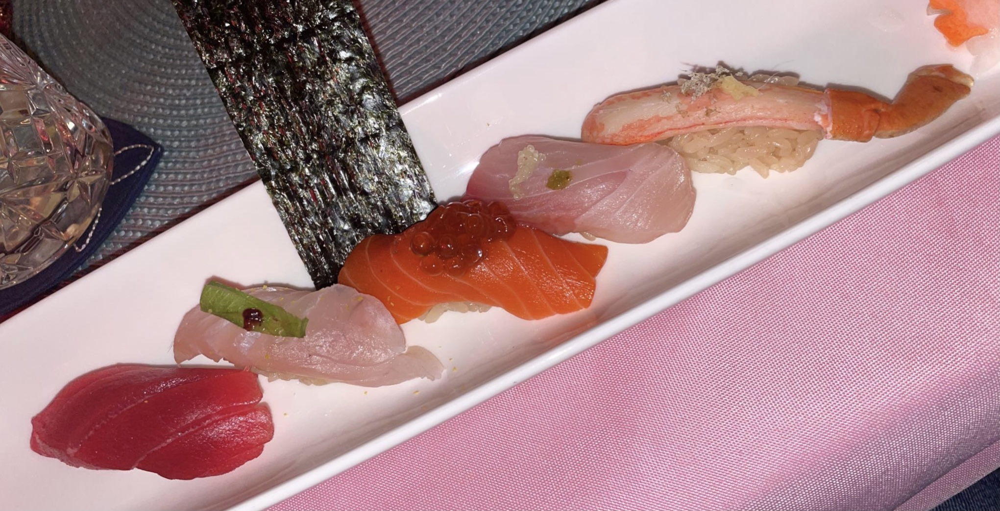

Sushi Jin serves "Omakase" based on its philosophy and concept. They serve a wide variety of fishes, selected from wild, local and sustainable fishes, that have different tastes and textures. Sushi Jin lives for sushi and strives to study and improve everyday. For more information visit: www.sushijinny.com
Matsu Sushi has served creatively and traditionally prepared sushi since 2004. The authentic culinary skilled chefs allows you to enjoy Japanese cuisine at high quality service, presentation and freshness. For more information visit: www.sushibymatsu.com